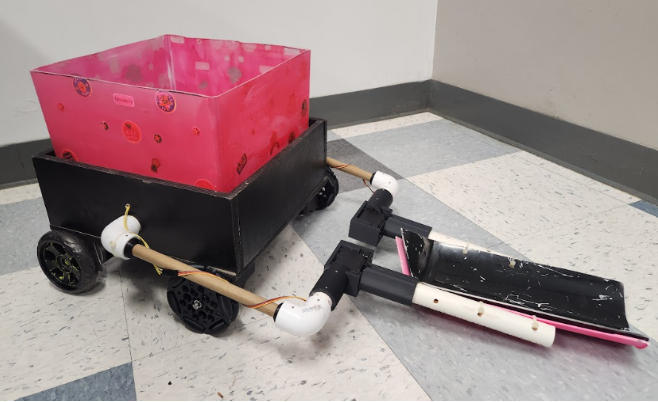
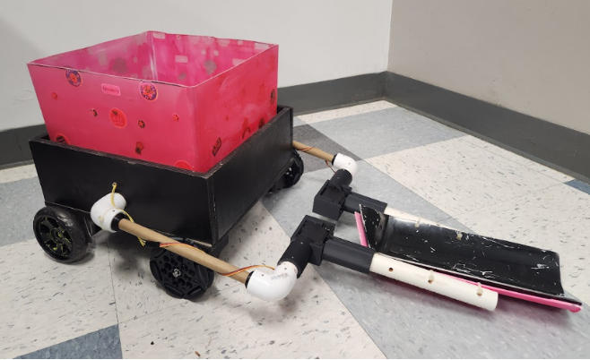

Projects
-
Social Sync App — Python & React project for music sharing
GitHub Repo
Autonomous Trash Collecting Robot
As Project Manager for an interdisciplinary engineering team at Theta Tau, I led the design and implementation of an Arduino-based autonomous trash-collecting robot. The system featured a front-loading scoop mechanism and ultrasonic sensors to detect and retrieve waste. My responsibilities included CAD design oversight, sensor calibration, task delegation, and iterative testing to ensure smooth mechanical and software integration.
Key Deliverables
- ✅ Led a 17-member Agile team using weekly standups, sprint planning, and Trello boards
- 📐 Designed the chassis and mechanical scoop in CAD for fabrication via 3D printing
- 🤖 Programmed the robot to autonomously detect and collect small trash items using Arduino and ultrasonic sensors
- 🚀 Ensured on-time delivery of all milestones within budget constraints
Gallery

 
